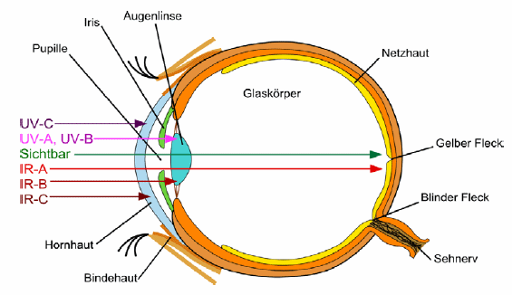
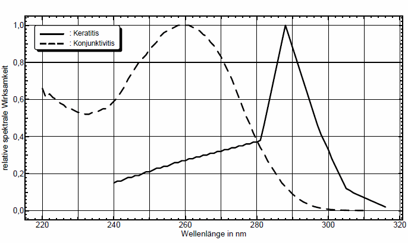
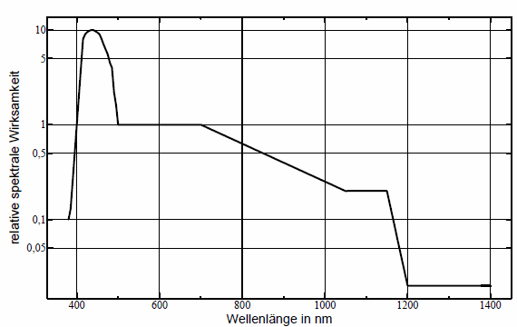
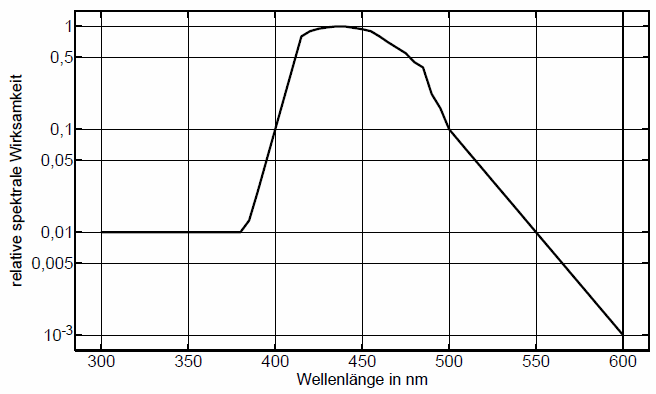
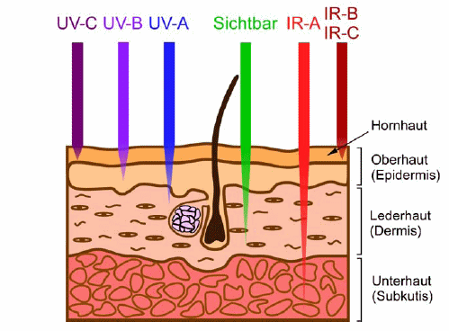
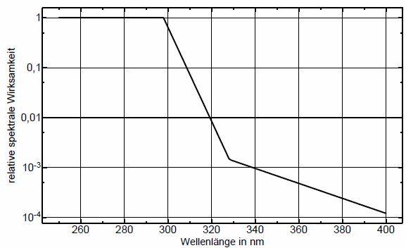
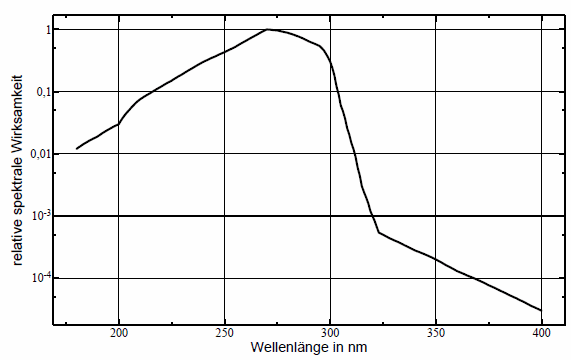
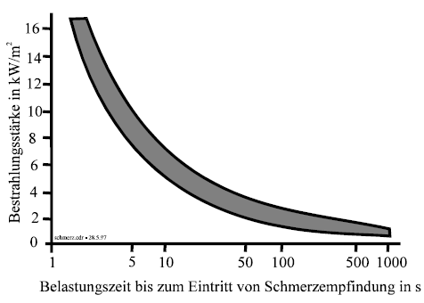

(1) Die Wirkung inkohärenter optischer Strahlung ist im Wesentlichen auf die Augen und die Haut begrenzt. Die inneren Organe werden nicht gefährdet.
(2) Bei den schädigenden biologischen Wirkungen ist zu unterscheiden, ob die Einwirkung der Strahlung auf die Haut oder auf das Auge erfolgt. Weiterhin ist zwischen akuten und chronischen Schädigungen zu differenzieren. Art und Schwere einer durch optische Strahlung hervorgerufenen Schädigung ist neben der Abhängigkeit von der Wellenlänge auch von der Bestrahlungsstärke, gegebenenfalls der Strahldichte, der Bestrahlungsdauer sowie der bestrahlten Fläche und den optischen Eigenschaften des Gewebes abhängig. Die verschiedenen biologischen Wirkungen werden durch Wichtungsfunktionen beschrieben [1]. Unter Berücksichtigung eines Sicherheitsfaktors bilden die Wichtungsfunktionen die Grundlage für Expositionsgrenzwerte, wie sie im Abschnitt 5 der TROS IOS, Teil 2 "Messungen und Berechnungen von Expositionen gegenüber inkohärenter optischer Strahlung" festgelegt sind.
(3) In Tabelle A.1 sind die unterschiedlichen Schädigungsmöglichkeiten für das Auge und für die Haut dargestellt. Bei der biologischen Wirkung gibt es nach dem heutigen Stand der Wissenschaft keinen Unterschied zwischen der kohärenten und inkohärenten Strahlung [2]. Die grundlegenden biologischen Wirkungsmechanismen sind die thermische Wirkung (durch Absorption der Strahlung im Gewebe entsteht Wärme), die fotochemische und fotobiologische Wirkung (hauptsächlich durch kurzwellige optische Strahlung werden chemische Reaktionen ausgelöst) und die fotomechanische Wirkung (kurze Impulse können Schockwellen im Gewebe hervorrufen).
(4) Eine Reihe chemischer Verbindungen und Medikamente kann das biologische Gewebe für die fotochemische Wirkung von optischer Strahlung sensibilisieren. Dadurch können heftige biologische Reaktionen, so genannte "fototoxische" Reaktionen, auftreten (siehe Abschnitt 3).
(5) Eine lange andauernde Bestrahlung durch IR-Strahlung, die unter den Expositionsgrenzwerten für die IR-Strahlung liegt, kann dennoch eine Gefährdung für die Beschäftigten durch indirekte Auswirkungen darstellen. Es kann durch diese Bestrahlung zu einer Erhöhung der Körpertemperatur kommen, die mit akuten gesundheitlichen Auswirkungen (Beanspruchung des Herz-Kreislaufsystems, Thrombosegefahr, Flüssigkeitsverlust und Nachlassen der Aufmerksamkeit) verbunden sein kann. Dieser Aspekt ist unter anderem bei Hitzearbeitsplätzen zu beachten.
Tab. A.1 Einige Auswirkungen von optischer Strahlung auf Auge und Haut [7]
| Wellenlängenbereich | Auge | Haut |
| UV-C | Photokeratitis Photokonjunktivitis |
Erythem Präkanzerosen Karzinome |
| UV-B | Photokeratitis Photokonjunktivitis Katarakt |
Verstärkte Pigmentierung (Spätpigmentierung) Beschleunigte Prozesse der Hautalterung Erythem Präkanzerosen Karzinome |
| UV-A | Katarakt | Bräunung (Sofortpigmentierung) Beschleunigte Prozesse der Hautalterung Verbrennung der Haut Karzinome |
| Sichtbare Strahlung (VIS) |
Fotochemische und Fotothermische Schädigung der Netzhaut |
Fotosensitive Reaktionen Thermische Schädigung der Haut |
| IR-A | Katarakt Thermische Schädigung der Netzhaut |
Thermische Schädigung der Haut |
| IR-B | Katarakt Thermische Schädigung der Hornhaut |
Thermische Schädigung der Haut |
| IR-C | Thermische Schädigung der Hornhaut | Thermische Schädigung der Haut |
(1) Das am meisten gefährdete Organ beim Umgang mit optischer Strahlung ist das Auge (Abbildung A.1). Die Hornhaut (Cornea), die selbst etwa 75 % Wasser enthält, ist nach außen nur durch eine wenige Mikrometer dicke Tränenflüssigkeitsschicht gegen die Luft geschützt. An die Hornhaut schließt sich die vordere Augenkammer an, die mit Kammerwasser gefüllt ist. Vor der Augenlinse befindet sich kreisförmig die Regenbogenhaut (Iris). Die Öffnung der Regenbogenhaut wird Pupille genannt. Der Pupillendurchmesser ändert sich je nach Beleuchtungsstärke (gemeinhin als "Helligkeit" bezeichnet), und bestimmt damit, wie viel sichtbare und nahe infrarote optische Strahlung ins Auge eintreten kann. Der Pupillendurchmesser kann dabei von 1,5 mm bis ca. 8 mm variieren. Der Raum hinter der Iris bis zur Linse wird hintere Augenkammer genannt.
(2) Die Linse ist mit einer elastischen Kapsel und einem weichen Kern in der Lage, ihre Form und damit die Brechkraft zu ändern (Akkommodation). Zwischen der Linse und der Netzhaut (Retina) befindet sich der Glaskörper, der zu etwa 98 % aus Wasser sowie einem Netz von Kollagenfasern besteht und eine gallertartige Struktur hat.
(3) In der Netzhaut, wo die Photorezeptoren liegen, werden die Lichtreize zu elektrischen Signalen verarbeitet, die durch den Sehnerv an das Gehirn weitergeleitet werden. An der Einmündung des Sehnervs und der Blutgefäße in die Netzhaut befinden sich weder Zapfen noch Stäbchen, sodass ein Sehen dort nicht möglich ist. Diese Stelle wird deshalb als "Blinder Fleck" bezeichnet.

| Abb. A.1 Aufbau des Auges |
(1) Die auf das Auge einwirkende UV-Strahlung wird je nach Wellenlänge von der Hornhaut oder der Augenlinse absorbiert. Bei Strahlung im UV-A-Bereich erfolgt dies hauptsächlich in der Augenlinse. Durch UV-B- und UV-C-Strahlung kann am Auge eine Entzündung der Hornhaut (Photokeratitis) und Bindehaut (Photokonjunktivitis) entstehen, die auch als Verblitzen der Augen, Schweißerblende oder Schneeblindheit bezeichnet wird. In Abbildung A.2 ist die spektrale Wirksamkeit (Darstellung der Wichtungsfunktion, die einer biologischen Wirkung entsprechen soll) für die Entzündung der Hornhaut und der Bindehaut beispielhaft dargestellt. Die Symptome treten in der Regel erst fünf bis zehn Stunden nach der Bestrahlung auf und reichen von leichten Augenreizungen bis zu starken Augenschmerzen. Die Entzündungen sind nach ein bis drei Tagen wieder abgeklungen.

| Abb. A.2 | Die Wirkung optischer Strahlung auf verschiedene Teile des Auges ist wellenlängenabhängig. Die Abbildung zeigt die relative spektrale Wirksamkeit zur Entstehung der Photokeratitis und Photokonjunktivitis [1]. |
(2) Nach langjähriger Einwirkung von UV-A-Strahlung kann ein Katarakt (Grauer Star) entstehen. Da sich die Wirkung der UV-A-Strahlung über Jahrzehnte kumuliert, kann es zu einer Trübung der Augenlinse kommen. Die Linse kann sich im Gegensatz zu den meisten anderen menschlichen Geweben nicht erneuern und muss bei starker Einbuße der Sehfähigkeit durch eine künstliche Linse ersetzt werden. In Deutschland werden ca. 600 000 Staroperationen pro Jahr durchgeführt, die zum Teil auf eine zu hohe Lebensdosis an UV-A-Strahlung zurückzuführen sind (aktuelle Zahlen findet man unter [5]).
(1) Strahlung im Bereich von etwa 300 nm bis 1400 nm kann bis zur Netzhaut vordringen [8]. Das Sehvermögen ist auf den Spektralbereich 380 nm bis 780 nm begrenzt und diese für den Menschen sichtbare Strahlung wird als Licht bezeichnet. Strahlung gelangt durch die Hornhaut, die Augenlinse und den Glaskörper und wird auf der Netzhaut abgebildet. Netzhautschädigungen sind besonders schwerwiegend und können zu erheblichen Beeinträchtigungen des Sehvermögens führen. Schäden können durch intensive optische Strahlungsquellen hervorgerufen werden.
(2) Kleinere Schädigungen der Netzhaut bleiben meist unbemerkt, soweit sie außerhalb des Flecks des schärfsten Sehens liegen. Größere geschädigte Stellen können jedoch zu Ausfällen im Gesichtsfeld führen. Bei einer Schädigung an der Stelle des schärfsten Sehens kann das Scharfsehen und das Farbsehvermögen stark verringert werden. Wird gar der Blinde Fleck getroffen, droht die völlige Erblindung, da dort alle Sehnerven gebündelt und in das Gehirn geleitet werden. Im Hinblick auf eine potenzielle Netzhautschädigung muss besonders berücksichtigt werden, dass darüber hinaus auch optische Strahlung im IR-A-Spektralbereich bis 1400 nm von der Augenlinse auf die Netzhaut fokussiert wird. Obwohl sie nicht wahrgenommen werden kann, weil die Netzhaut für diese Wellenlängen keine Rezeptoren besitzt, kann sie dort Schädigungen hervorrufen. Eine Netzhautschädigung ist irreversibel.
(3) Im sichtbaren Bereich wird zwischen den thermischen und den fotochemischen Netzhautschäden unterschieden.
(4) Thermische Effekte dominieren im langwelligen Teil des sichtbaren Spektrums und im IR-Spektralbereich: Die im Gewebe enthaltenen Moleküle führen verstärkt Schwingungen aus, die eine Erhitzung des Gewebes bewirken. Die entstehende Wärme wird auf das umliegende Gewebe übertragen. Bleibt die Temperatur des Gewebes auch bei länger dauernder Exposition unterhalb eines Schwellenwertes, so ist keine Schädigung zu befürchten. Erst bei Überschreitung dieses Wertes kann aufgrund einer lokalen Temperaturüberhöhung ein Schaden entstehen. In Abbildung A.3 ist die relative spektrale Wirksamkeit zur thermischen Netzhautschädigung dargestellt.

| Abb. A.3 Relative spektrale Wirksamkeit zur thermischen Netzhautschädigung |
(5) Beim fotochemischen Effekt wird die Energie der einfallenden optischen Strahlung nicht in Wärme, sondern in chemische Reaktionsenergie umgesetzt. Diese Effekte dominieren bei ausreichender Photonenenergie, d. h. vor allem für optische Strahlung im UV- und kurzwelligen sichtbaren Spektralbereich. Bei der fotochemischen Wirkung kann die Absorption zu Schädigungen auf molekularer Ebene führen. Diese Veränderungen sind kumulativ. In Abbildung A.4 ist die relative spektrale Wirksamkeit zur fotochemischen Netzhautschädigung dargestellt.

| Abb. A.4 Relative spektrale Wirksamkeit zur fotochemischen Netzhautschädigung |
(6) Strahlung im Spektralbereich von 300 nm bis 700 nm kann zu fotochemischen Schädigungen im Auge führen [9]. Dieser Bereich beinhaltet Teile der UV-B-Strahlung, die gesamte UV-A-Strahlung und den größten Teil der sichtbaren Strahlung. Die damit verbundene Gefährdung, dessen Maximum im blauen Bereich liegt, wird als "Blaulichtgefährdung" bezeichnet und kann zu einer dauerhaften Beeinträchtigung des Sehens führen.
(7) Auch eine langjährige Einwirkung von IR-Strahlung kann zu einer Linsentrübung (Katarakt) führen. Diese Schädigung ist irreversibel und kann zur vollständigen Erblindung führen. Eine getrübte Augenlinse kann heute operativ durch eine künstliche Linse ersetzt werden. Ein Beispiel für Tätigkeiten, bei denen nach langjähriger Einwirkung von IR-Strahlung eine Linsentrübung auftreten kann, ist die Arbeit von Glasmachern an Glasschmelzöfen. Im IR-Spektralbereich oberhalb einer Wellenlänge von etwa 2500 nm ist nur noch die Hornhaut betroffen [10].
(1) Unterhalb der Schädigungsgrenze kann Strahlung aus dem sichtbaren Spektralbereich durch ihre vorübergehende Blendwirkung ein hohes sekundäres Gefahrenpotenzial besitzen. Nach dem Blick in helle, grelle Lichtquellen, z. B. Scheinwerfer oder Projektoren, können temporär eingeschränktes Sehvermögen und Nachbilder je nach Situation zu Irritationen, Belästigungen, Beeinträchtigungen und sogar zu Unfällen führen. Grad und Abklingzeit der Blendeffekte sind nicht einfach quantifizierbar. Die Blendwirkung hängt jedoch maßgeblich vom Helligkeitsunterschied zwischen Blendquelle und Umgebung, von der ausgeübten Tätigkeit und von den Expositionsparametern wie Bestrahlungsstärke, Wellenlänge und Expositionsdauer ab.
(2) Auch Stroboskopeffekte können zu Gefährdungen durch indirekte Auswirkungen im Sinne der OStrV führen. Beispielsweise können bewegte Maschinenteile dadurch nicht mehr als solche erkannt werden.
(1) Ein wesentlicher Bestandteil des Hautgewebes ist Wasser. Bei der Haut, wie auch bei allen anderen biologischen Geweben, ist eine starke Zunahme der Absorption bei kürzeren Wellenlängen festzustellen (Abbildung A.5). UV-A-Strahlung kann noch einige Millimeter in die Haut eindringen, während UV-C-Strahlung bereits in der Oberhaut absorbiert wird. Die Strahlung aus dem IR-A-Spektralbereich kann sehr tief in die Haut eindringen, während IR-B- und IR-C-Strahlung bereits in der Oberhaut absorbiert wird.

| Abb. A.5 Eindringvermögen verschiedener Wellenlängen in die Haut. Die Pfeilstärke weist auf die Abnahme der Strahlung mit der Tiefe im Gewebe hin. |
(2) UV-A-Strahlung bewirkt in der Haut eine Sofortpigmentierung (Bräunung) ohne vorherige Erythembildung (Rötung der Haut, Sonnenbrand). Eine weitere Wirkung der UV-A-Strahlung ist die vermehrte Bildung von Hornhaut (Lichtschwiele). Diese Verdickung der Hornhaut und die stärkere Pigmentierung liefern für den Schutz vor inkohärenter optischer Strahlung keinen relevanten Beitrag [3] und werden daher bei der Gefährdungsbeurteilung nicht berücksichtigt.
(1) Die wichtigste akute biologische Wirkung der UV-B- und UV-C-Strahlung ist die Erythembildung ("Sonnenbrand"). Sie kann durch künstliche oder natürliche UV-Strahlung hervorgerufen werden. Die Symptome treten in der Regel zwei bis acht Stunden nach Überschreiten einer individuellen Schwellenbestrahlung auf und können sich als schwache Rötung der Haut bis hin zur Blasenbildung mit starken Schmerzen zeigen. Nach drei bis vier Tagen ist in der Regel ein Nachlassen der Rötung festzustellen, wobei sich die Wahrscheinlichkeit für eine langfristige Schädigung im Verlauf des Lebens erhöht.

| Abb. A.6 | Relative spektrale Wirksamkeit zur Bildung des Erythems nach dem Stand der Technik [1] |
(2) Die Wichtungsfunktion für die Bildung des Erythems zeigt für den Wellenlängenbereich von 250 nm bis 297 nm ein Maximum und fällt in dem Bereich von 300 nm bis 328 nm etwa um den Faktor 1 000 steil ab (Abbildung A.6). Die Erythemwirksamkeit im UV-A-Bereich ist im Vergleich zum Großteil der UV-B-Strahlung wesentlich schwächer (um den Faktor 1 000 bis 10 000). Diese Werte gelten für eine gesunde, nicht vorgebräunte Haut und können für Personen mit erhöhter Fotosensitivität nicht herangezogen werden.
(3) Unter Berücksichtigung der relativen spektralen Wirkungsfunktionen für Auge und Haut (Abbildungen A.2 und A.6) ist in Anhang 2 der TROS IOS, Teil 2 "Messungen und Berechnungen von Expositionen gegenüber inkohärenter optischer Strahlung" eine relative Wichtungsfunktion S(λ) (Abbildung A.7) angegeben. Inkohärente optische Strahlungsquellen werden im Wellenlängenbereich von 100 nm bis 400 nm nach dieser Wichtungsfunktion gemeinsam für Haut und Auge bewertet.

| Abb. A.7 | Relative Wichtungsfunktion S(λ) für Auge und Haut |
(4) Nach langjähriger Einwirkung von UV-Strahlung, vornehmlich aus dem UV-A-Bereich, kann als chronische Schädigung eine vorzeitige Hautalterung (Elastose) auftreten. Diese fotoinduzierte Bindegewebsveränderung ist durch eine faltige Lederhaut und mangelnde Hautelastizität gekennzeichnet.
(5) Die UV-Strahlung ist nach der International Agency for Research on Cancer (IARC, englisch für Internationale Krebsforschungsagentur) als krebserzeugend eingestuft [11]. Wie viel UV-Strahlung die Haut verträgt, ist sehr individuell und von der Wellenlänge abhängig. Die Haut addiert jede Einwirkung von natürlichen und künstlichen UV-Strahlungsquellen, sowohl aus dem beruflichen Bereich als auch jedes Sonnenbad oder jeden Besuch im Solarium. Wer sich häufig der UV-Strahlung aussetzt, hat ein erhöhtes Risiko für Schädigungen des Erbgutes der Zellen in der Haut. Diese Zellen (deren Schädigung auch unterhalb der Rötung der Haut möglich ist) können dann zur Entstehung von Hautkrebs beitragen.
Hinweis:
Wie bei vielen Krebsarten ist die Früherkennung auch beim Hautkrebs ein wesentlicher Punkt für einen guten Heilungserfolg.
Eine weitere akute Wirkung der UV-Strahlung können fototoxische oder fotoallergische Hautreaktionen sein. Bei der fototoxischen Hautreaktion werden durch bestimmte Substanzen im Körper oder an der Hautoberfläche (z. B. Kosmetika oder Medikamente) unter Einwirkung von UV-Strahlung Entzündungen ausgelöst. Bei der fotoallergischen Hautreaktion wird eine Substanz durch UV-Strahlung chemisch aktiviert und umgewandelt und kann so eine Sensibilisierung der Haut hervorrufen. In beiden Fällen besteht dann eine besondere Empfindlichkeit gegenüber UV-Strahlung (z. B. am Arbeitsplatz durch Teer, Pech oder bestimmte pflanzliche Stoffe). In einer Empfehlung der Strahlenschutzkommission sowie im DGUV-Grundsatz G17 werden fototoxische und fotoallergische Substanzen aufgeführt [4, 12].
(1) Sichtbare optische Strahlung kann bei entsprechendem Ausmaß zu einer gefährdenden Hauterwärmung führen und auch fotosensitive Reaktionen hervorrufen.
(2) Die Photonenenergie von sichtbarer und IR-Strahlung ist zu gering (kleiner als 3,26 eV), um ionisierend zu wirken. Strahlung mit Wellenlängen bis ca. 550 nm kann jedoch einige kovalente Molekülbindungen aufbrechen; bei Wellenlängen bis ca. 660 nm ist das Aufbrechen von chemischen Bindungen möglich. Insbesondere für größere Wellenlängen ist der wesentliche Wirkmechanismus neben diesen fotochemischen Prozessen die Umwandlung der Strahlungsenergie in Wärme. Deren Wirkung beruht auf einer entsprechenden Temperaturerhöhung. Das Eindringvermögen der Strahlung ins Gewebe und der Ort der Umwandlung in Wärme hängen stark von der Wellenlänge ab. In Abbildung A.5 wird dies an Hand des unterschiedlichen Eindringvermögens in der Haut schematisch dargestellt, in Abbildung A.1 für das Auge. Von den einzelnen Schichten der Haut und des Auges wird immer nur ein Teil der einfallenden Strahlung absorbiert.
(3) Bestrahlungsstärken im sichtbaren Spektralbereich können, wie bei der Infrarotstrahlung, zu mehr oder weniger starker Hauterwärmung führen. Über dadurch verursachte Hautschäden wurde bisher wenig bekannt.
(4) Durch Licht, vermutlich auch durch UV-A-Strahlung, kann eine Lichtdermatose, vielfach "Lichtallergie" genannt, ausgelöst werden. Dabei scheint ein körpereigenes Allergen aktiviert zu werden, was sich in einer Art Nesselsucht äußert, bei der Jucken, Brennen, Rötung und Quaddeln auftreten können.
(5) Bei Einwirkung hoher Bestrahlungsstärken von IR-Strahlung auf die Haut kann es zur Verbrennung der Haut kommen. IR-Strahlung dringt in Abhängigkeit von der Wellenlänge unterschiedlich weit in die Haut ein (siehe Abbildung A.5). Strahlung mit einer Wellenlänge von 1000 nm wird überwiegend bis in etwa 1 mm Tiefe in der Haut absorbiert, längerwellige Strahlung bereits in der Epidermis, d. h. in einigen 10 µm Tiefe, also in der aus abgestorbenen Zellen bestehenden Hornhaut.

| Abb. A.8 | Schmerzgrenze der unbekleideten Haut in Abhängigkeit von der Bestrahlungsstärke [13] |
(6) Insbesondere bei größeren Wellenlängen (z. B. 10 µm) führt dies bei hoher Bestrahlungsstärke zu starker lokaler Erwärmung. Wegen der beteiligten Wärmetransportvorgänge ist die Bestrahlungsstärke, die zu einer Verbrennung führt, von der Dauer der Einwirkung abhängig. Diese Abhängigkeit ist in Abbildung A.8 dargestellt. Dabei ist in Abhängigkeit von der Einwirkungsdauer diejenige Bestrahlungsstärke aufgezeichnet, die zu einer Schmerzempfindung führt; dies bildet das Vorstadium zu einer Verbrennung. So führt z. B. eine Bestrahlungsstärke von etwa 7 kW/m² bis 10 kW/m² nach etwa 5 s zu einer Schmerzempfindung und kurz darauf zur Verbrennung. Aber schon Bestrahlungsstärken von ca. 1,5 kW/m² führen bei längerer Bestrahlung (über 10 min) zu Schmerzempfindungen.